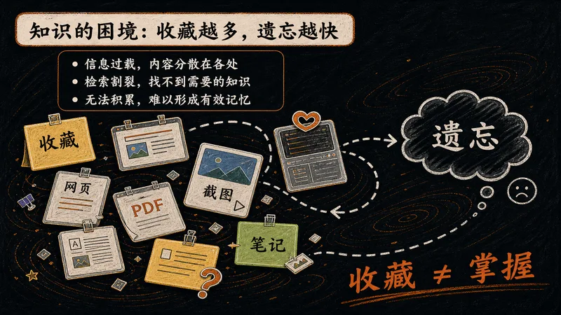
知识的困境
我们每天都在收藏文章、下载资料，可真正留在脑子里的却越来越少。资料越堆越高，知识却没有积累——这是几乎所有现代人都面临的困境。
- 信息过载：每天涌入的内容远超大脑处理能力。
- 检索割裂：传统搜索只能找回片段，看不到关联。
- 缺乏沉淀：每次提问都从零开始，不复用过往。
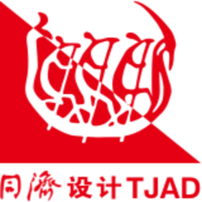
把 Karpathy 的知识库方法论，变成每个人都能上手的工程实践——让 AI 替你整理、关联、沉淀知识，让收藏不再等于遗忘。
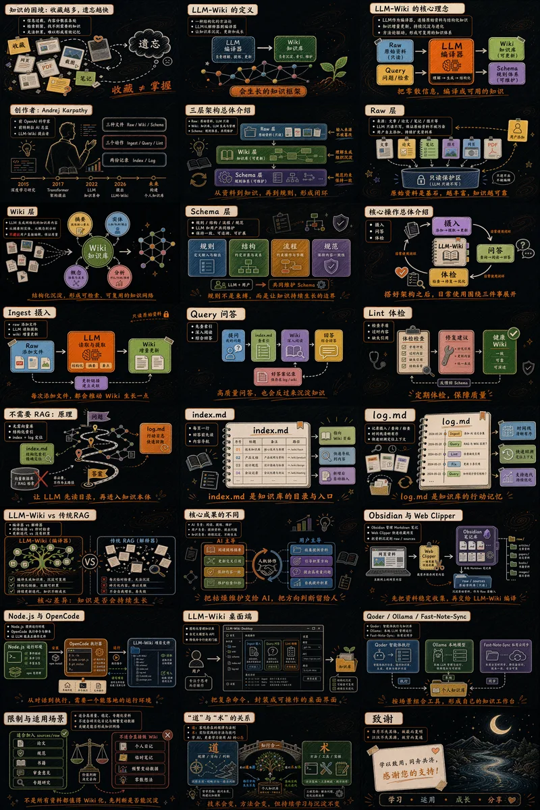
信息过载的时代，我们需要的不只是存储，而是一种让知识持续生长的方式。LLM-Wiki 正是为此而生的一套方法论。

我们每天都在收藏文章、下载资料，可真正留在脑子里的却越来越少。资料越堆越高，知识却没有积累——这是几乎所有现代人都面临的困境。
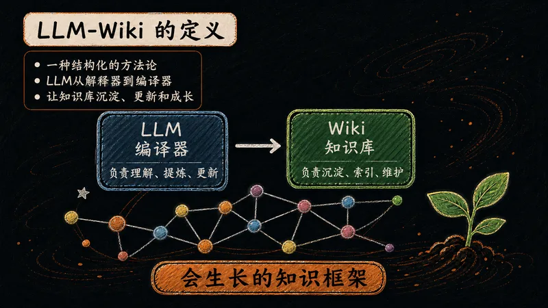
LLM-Wiki = LLM + Wiki。它借助大语言模型，把零散原始资料自动整理成结构化、可检索的知识库，让"数据库"升级为真正的"知识库"。
LLM-Wiki 的精髓在于"编译"二字——让大模型像编译器一样，把原始资料加工成可复用的知识资产。
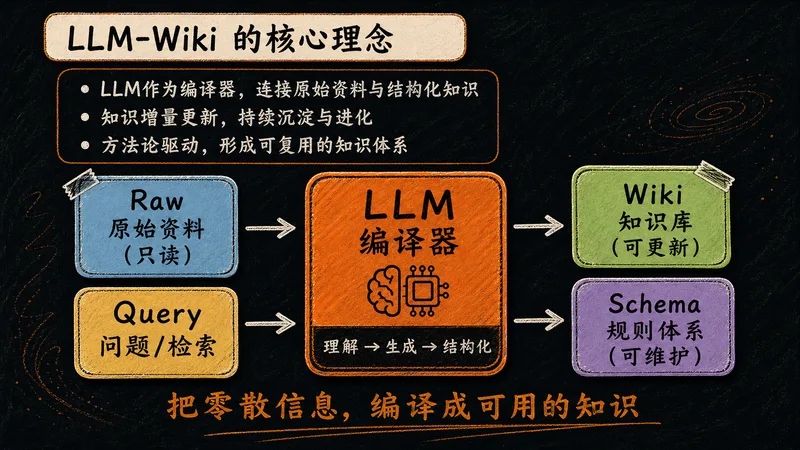
把 LLM 当作一台"知识编译器"：它读取原始资料，理解、生成、结构化，最终把零散信息编译成可复用的知识网络。
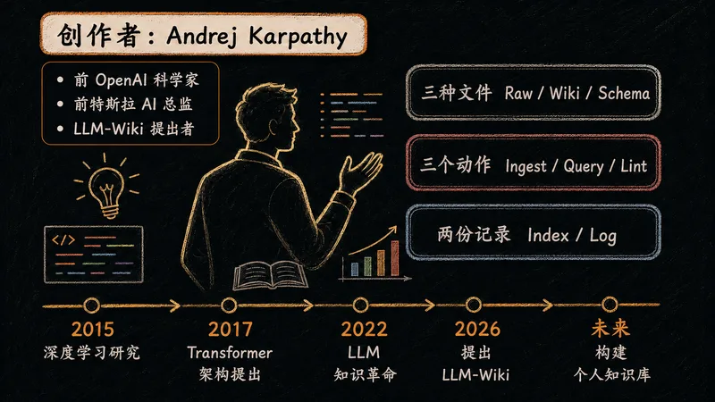
Andrej Karpathy，深度学习领域最具影响力的实践者之一，也是 LLM-Wiki 思想的核心来源。
LLM-Wiki 的骨架由三层构成，各司其职、形成闭环。理解这三层，就理解了整个体系的运作逻辑。
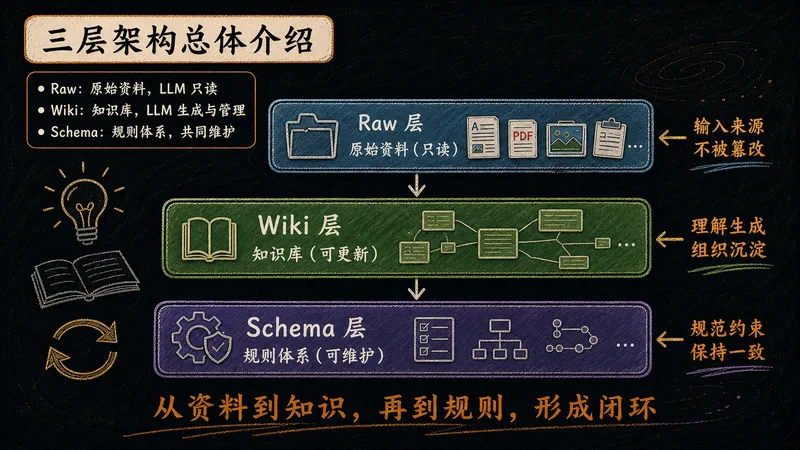
整个体系由三层构成，数据自下而上流动，规则自上而下约束，形成一个自我进化的闭环。
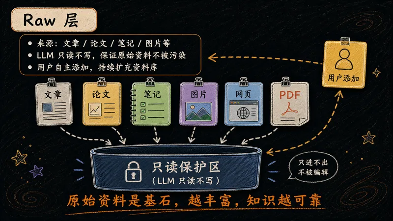
知识库的地基。所有原始素材汇入此处，作为整个体系的输入源——越丰富，上层知识越可靠。
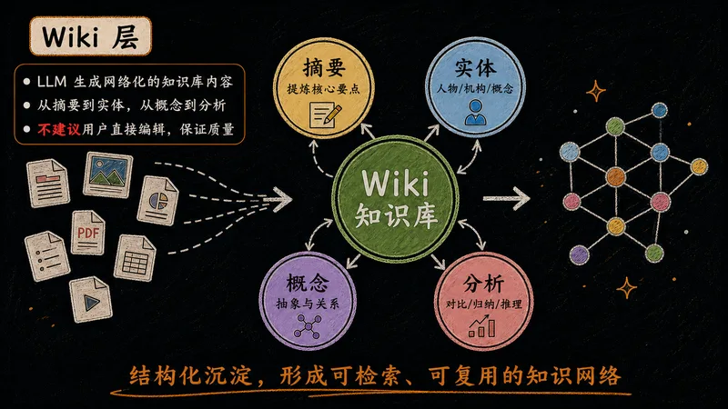
LLM 在此生成网络化的知识内容，把原始资料加工成可检索、可复用的结构。
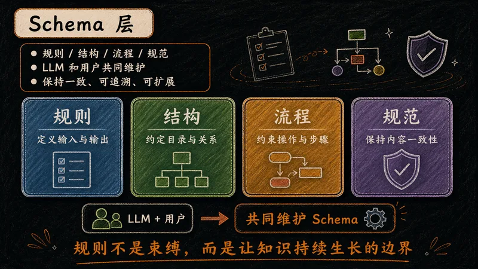
定义知识库"长什么样"的规则层，是整个体系的骨架和目录，约束 LLM 的产出格式。
架构搭好后，日常使用围绕三个动作展开，覆盖知识库的输入、输出与维护全生命周期。
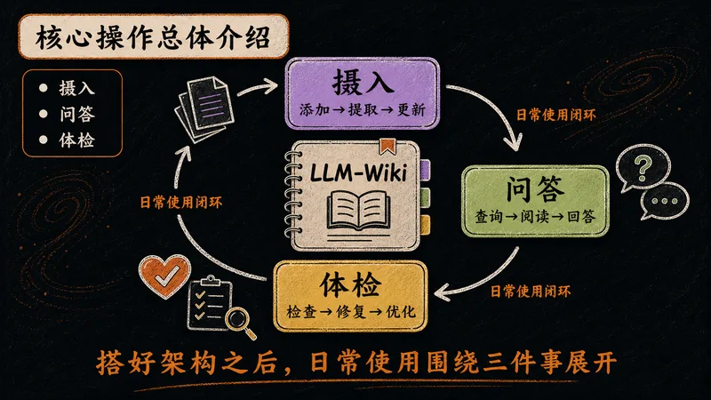
日常使用围绕三个动作展开，分别对应知识库的输入、输出和维护，构成完整闭环。
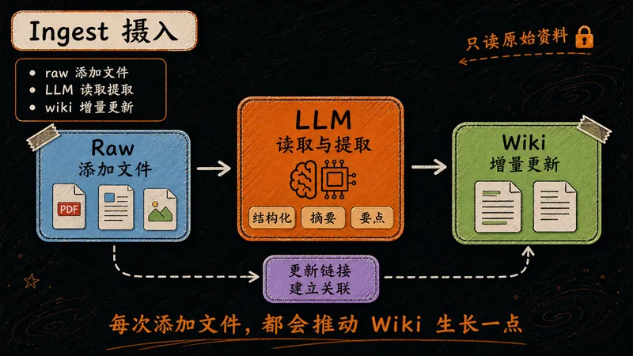
把资料"喂"进知识库的过程。每添加一份原始文件，LLM 就读取、提取、更新一次 Wiki 层。
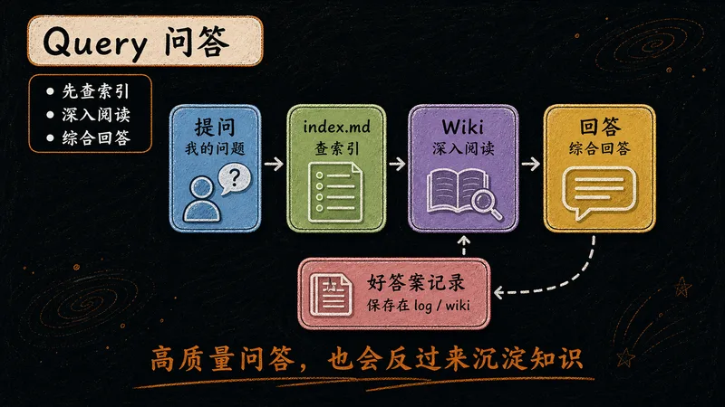
直接在知识库上提问。LLM 基于已结构化的知识作答，无需向量数据库、无需 RAG。
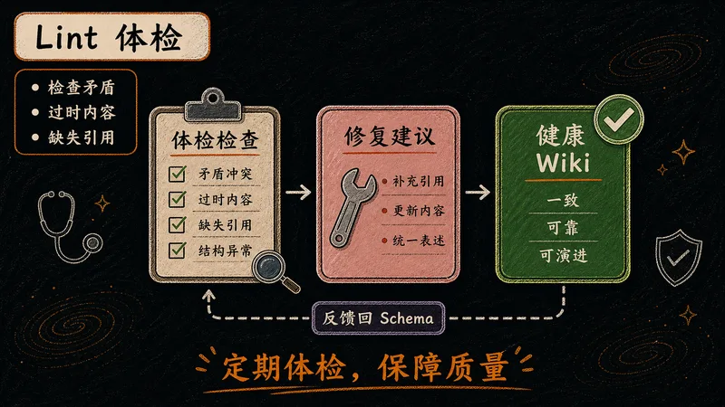
定期给知识库做"健康检查"。LLM 遍历全库，发现并修复问题，输出体检报告。
传统 RAG 靠向量检索，LLM-Wiki 靠结构化加载。两种思路，带来准确度与可控性的根本差异。
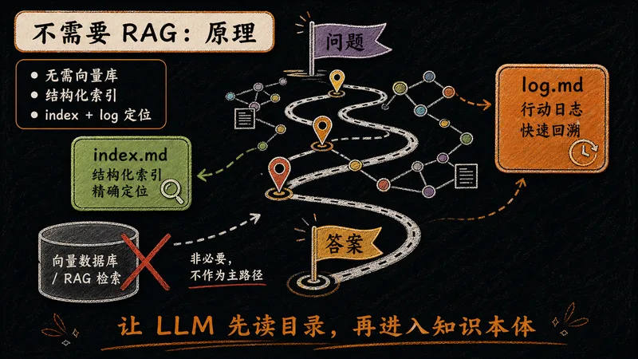
传统 RAG 先检索再生成，可能丢失上下文；LLM-Wiki 直接全量加载知识库，准确度与可控性更高。
index.md 与 log.md。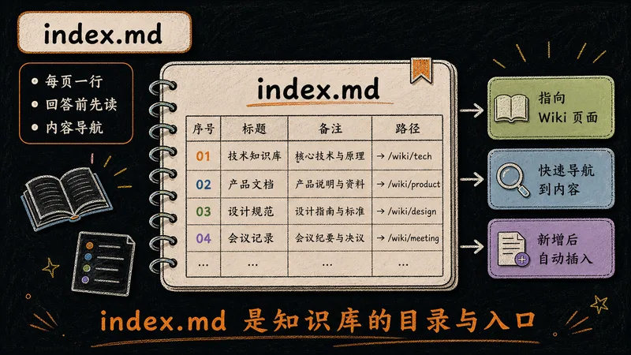
整个知识库的导航枢纽。每个 Wiki 页面占一行，LLM 回答问题前先读取它来定位。
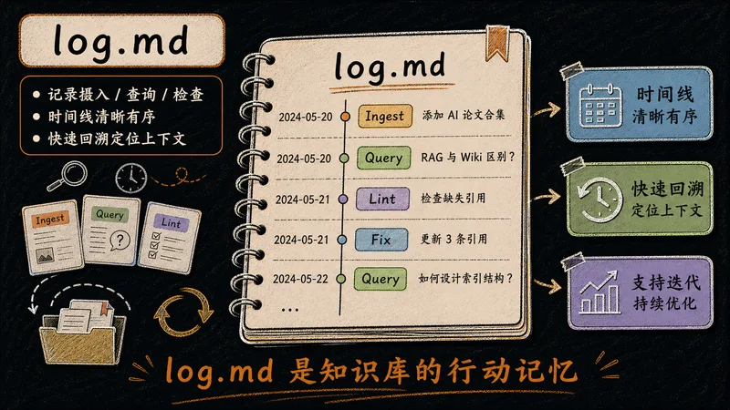
按时间顺序记录每次摄入、查询、体检的操作，让知识库的变更历史可回溯。
从知识状态到可维护性，LLM-Wiki 在每个维度都展现出不同的哲学。
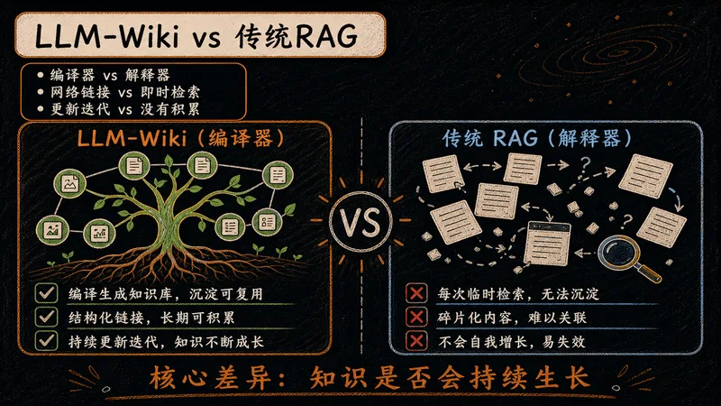
从知识状态、关联构建、累积效应到可维护性，LLM-Wiki 都展现出"编译型"的优势。
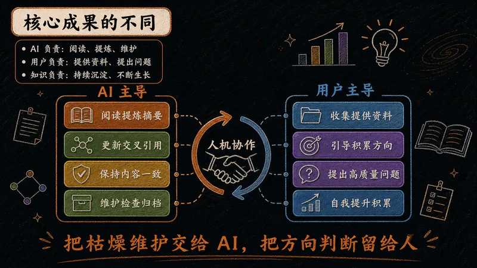
关键在于分工：把枯燥的整理维护交给 AI，人专注于提供资料与高质量提问。
理念讲完，接下来是实操。四组工具，覆盖从资料收集到本地运行、桌面应用到私有云同步的完整链路。
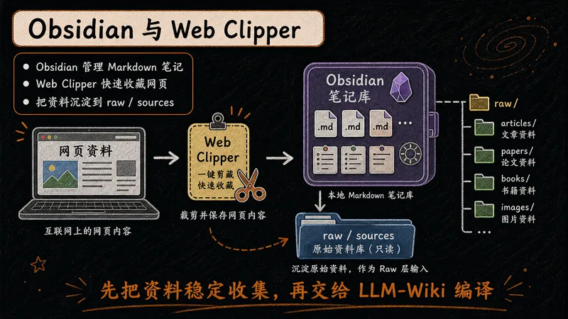
Obsidian 是本地优先的 Markdown 笔记软件，承载整个知识库；Web Clipper 是浏览器插件，一键把网页剪藏为 Markdown，汇入 Raw 层。
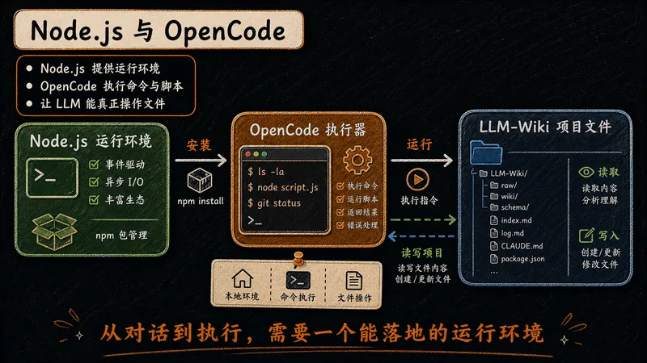
Node.js 提供 JavaScript 运行环境；OpenCode 是开源终端编程智能体，承担 LLM-Wiki 中"读取、提取、增量更新"的执行角色。
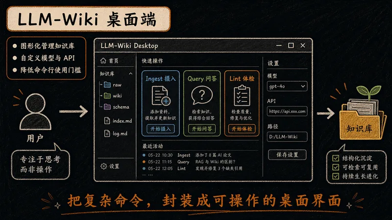
把命令行方案封装为图形化桌面应用，让不熟悉终端的用户也能一键完成摄入、问答与体检。
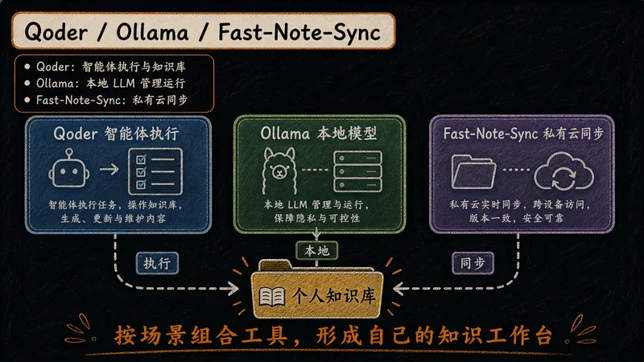
三件套组成本地 LLM 工作流闭环，适配从日常使用到保密场景的不同需求。
再好的方法也有边界。知道它适合什么、不适合什么，才能真正用好它。
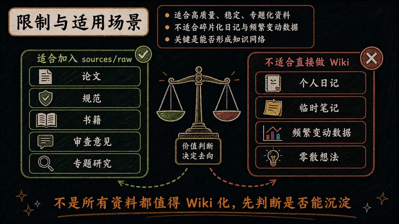
LLM-Wiki 依赖高质量、相对稳定的原始资料，因此更适合专题研究而非日常碎记。
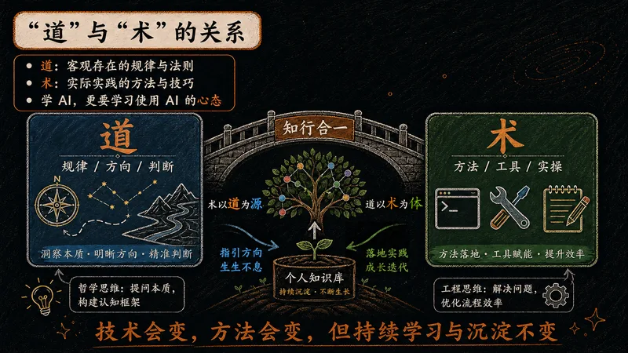
道是客观存在的规律与法则，术是实际实践的方法与技巧。学技术，更要有学习 AI 的心态。
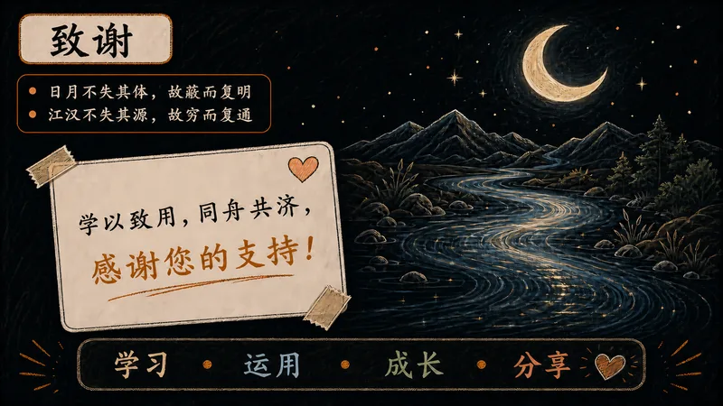
感谢 Karpathy 的启发，感谢开源社区与工具开发者，感谢各位的聆听。
日月不失其体，故蔽而复明
江汉不失其源，故穷而复通
也感谢专班组长杜明的鼓励，以及自己学习 AI 的初心。